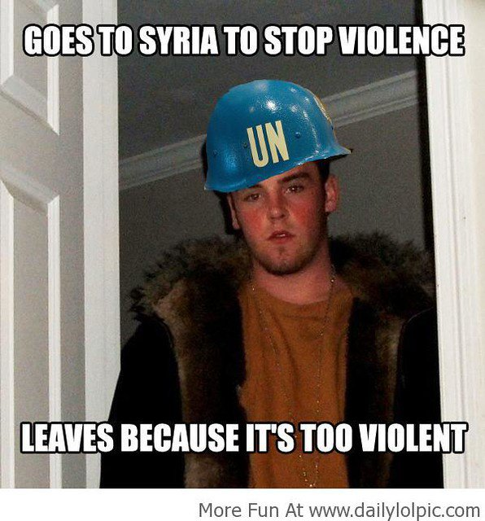

Hultman, Kathman & Shannon (2016). United Nations Peacekeeping Dynamics and the Duration of Post-Civil Conflict Peace.
Justin Leinaweaver (Spring 2026)
The United Nations (UN)
The Purposes of the United Nations are:
To maintain international peace and security, and to that end: to take effective collective measures for the prevention and removal of threats to the peace, and for the suppression of acts of aggression or other breaches of the peace, and to bring about by peaceful means, and in conformity with the principles of justice and international law, adjustment or settlement of international disputes or situations which might lead to a breach of the peace;
To develop friendly relations among nations based on respect for the principle of equal rights and self-determination of peoples, and to take other appropriate measures to strengthen universal peace;
To achieve international co-operation in solving international problems of an economic, social, cultural, or humanitarian character, and in promoting and encouraging respect for human rights and for fundamental freedoms for all without distinction as to race, sex, language, or religion; and
To be a centre for harmonizing the actions of nations in the attainment of these common ends (Chapter 1, Art. 1).
The Purposes of the United Nations are:
Maintain international peace and security
Solve international problems
Promote respect for human rights

1. Research Question
2. Argument
3. Are we confident in the conclusions?
Hypothesis 1 (H1)
Hypothesis 2 (H2)
Diagram the Model
Who are the key Interests?
What are the key Institutions?
What are the key Interactions?
Interests
Institutions
Interactions
Interests
Institutions
Interactions
Interests
Institutions
Interactions
Hypothesis 1 (H1)
Hypothesis 2 (H2)
Neorealism
Offensive Realism
Liberal Institutionalism
Economic Liberalism
Bargaining Model of War
Hultman, Kathman & Shannon (2016) on United Nations Peacekeeping